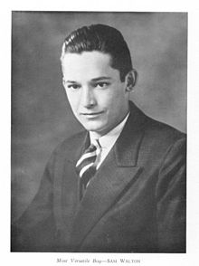

Sam Walton was born to Thomas Gibson Walton and Nancy Lee, in Kingfisher, Oklahoma. He lived there with his parents on their farm until 1923. However, farming did not provide enough money to raise a family, and Thomas Walton went into farm mortgaging. He worked for his brother's Walton Mortgage Company, which was an agent for Metropolitan Life Insurancewhere he foreclosedon farms during the Great Depression.
He and his family (now with another son, James, born in 1921) moved from Oklahoma. There they moved from one small town to another for several years. While attending eighth grade in Shelbina, Missouri, Sam became the youngest Eagle Scout in the state's history.In adult life, Walton became a recipient of the Distinguished Eagle Scout Award from the Boy Scouts of America.
Eventually the family moved to Columbia, Missouri. Growing up during the Great Depression, he did chores to help make financial ends meet for his family as was common at the time. He milked the family cow, bottled the surplus, and drove it to customers. Afterwards, he would deliver Columbia Daily Tribune newspapers on a paper route. In addition, he also sold magazine subscriptions.Upon graduating from David H. Hickman High School in Columbia, he was voted "Most Versatile Boy."
After high school, Walton decided to attend college, hoping to find a better way to help support his family. He attended the University of Missouri as an ROTC cadet. During this time, he worked various odd jobs, including waiting tables in exchange for meals. Also during his time in college, Walton joined the Zeta Phi chapter of Beta Theta Pi fraternity. He was also tapped by QEBH, the well-known secret society on campus honoring the top senior men, and the national military honor society Scabbard and Blade. Additionally, Walton served as President of Burall Bible Class, a large class of students from the University of Missouri and Stephens College. Upon graduating in 1940 with a bachelor's degree in economics, he was voted "permanent president" of the class.
Walton joined J. C. Penney as a management trainee in Des Moines, Iowa, three days after graduating from college. This position paid him $75 a month. Walton spent approximately 18 months with J. C. Penney. He resigned in 1942 in anticipation of being inducted into the military for service in World War II.n the meantime, he worked at aDuPont munitions plant near Tulsa, Oklahoma. Soon afterwards, Walton joined the military in the U.S. Army Intelligence Corps, supervising security at aircraft plants and prisoner of war camps. In this position he served at Fort Douglas in Salt Lake City, Utah. He eventually reached the rank of Captain.
In 1945, after leaving the military, Walton took over management of his first variety store at the age of 26. With the help of a $20,000 loan from his father-in-law, plus $5,000 he had saved from his time in the Army, Walton purchased a Ben Franklin variety store in Newport, Arkansas.The store was a franchise of the Butler Brothers chain.
Walton pioneered many concepts that became crucial to his success. Walton made sure the shelves were consistently stocked with a wide range of goods. His second store, the tiny "Eagle" department store, was down the street from his first Ben Franklin and next door to its main competitor in Newport.
With the sales volume growing from $80,000 to $225,000 in three years, Walton drew the attention of the landlord, P. K. Holmes, whose family had a history in retail.Admiring Sam's great success, and desiring to reclaim the store (and franchise rights) for his son, he refused to renew the lease. The lack of a renewal option, together with the prohibitively high rent of 5% of sales, were early business lessons to Walton. Despite forcing Walton out, Holmes bought the store's inventory and fixtures for $50,000, which Walton called "a fair price".